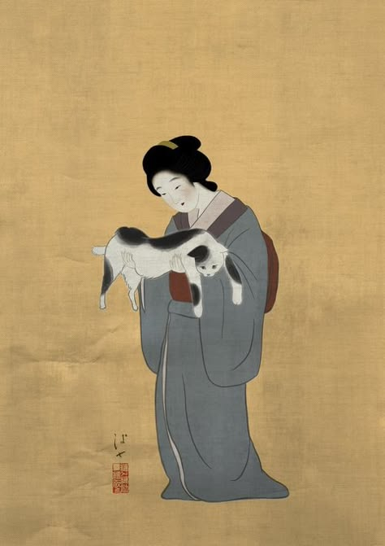
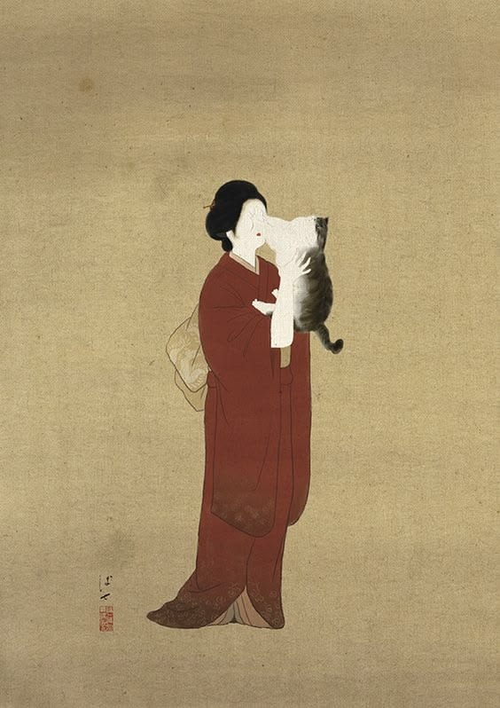
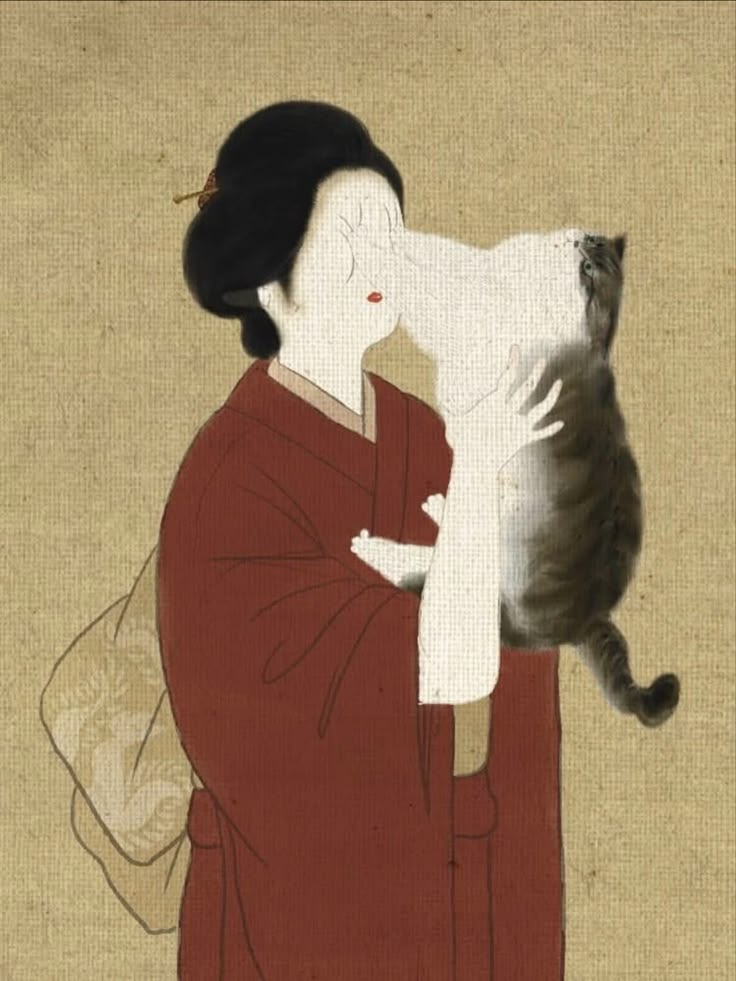
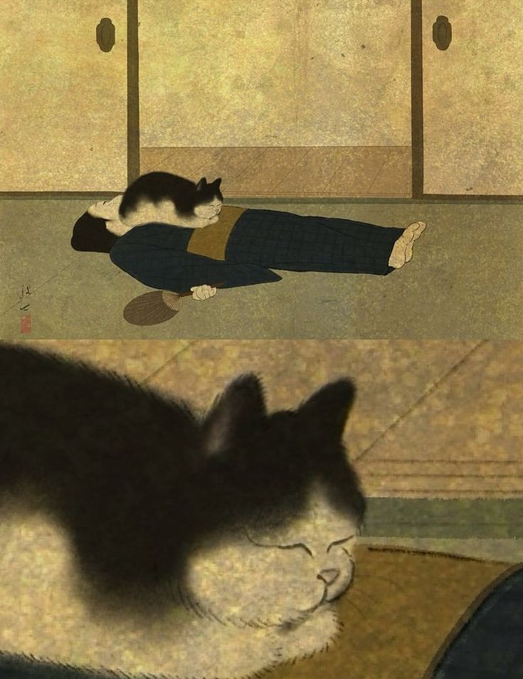
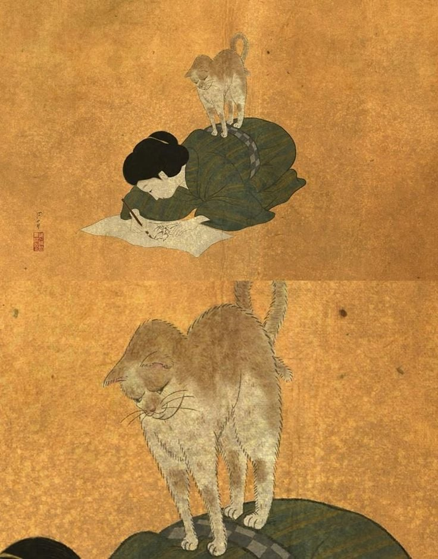
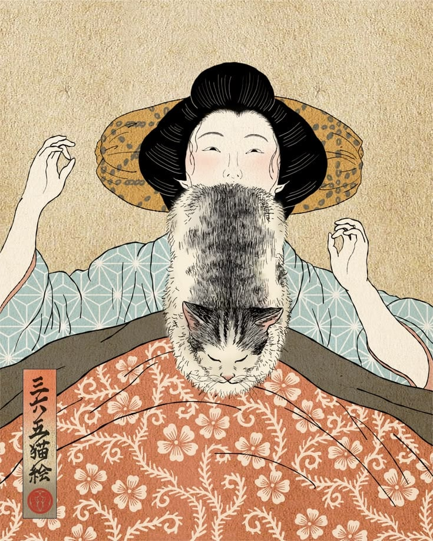
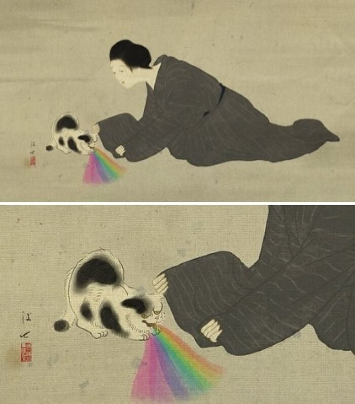
ㅡ
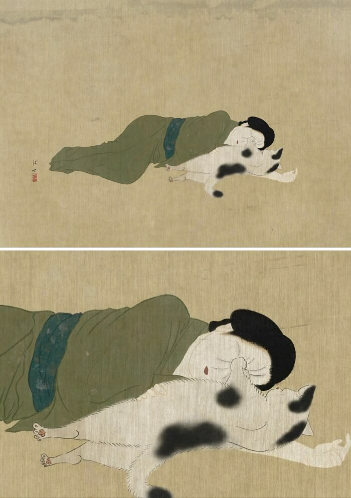
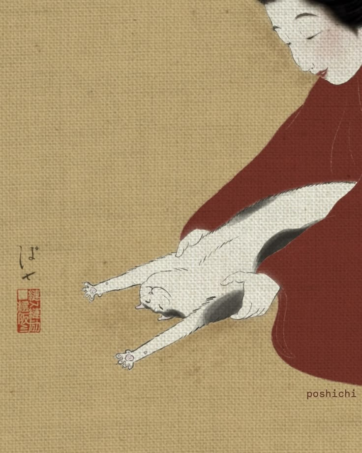
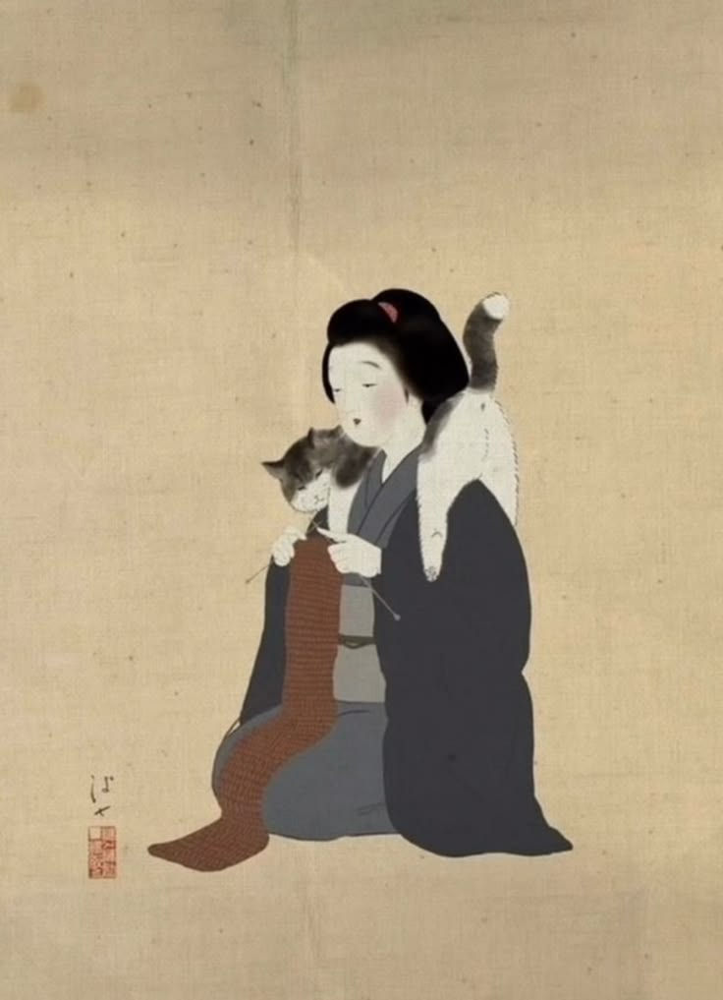
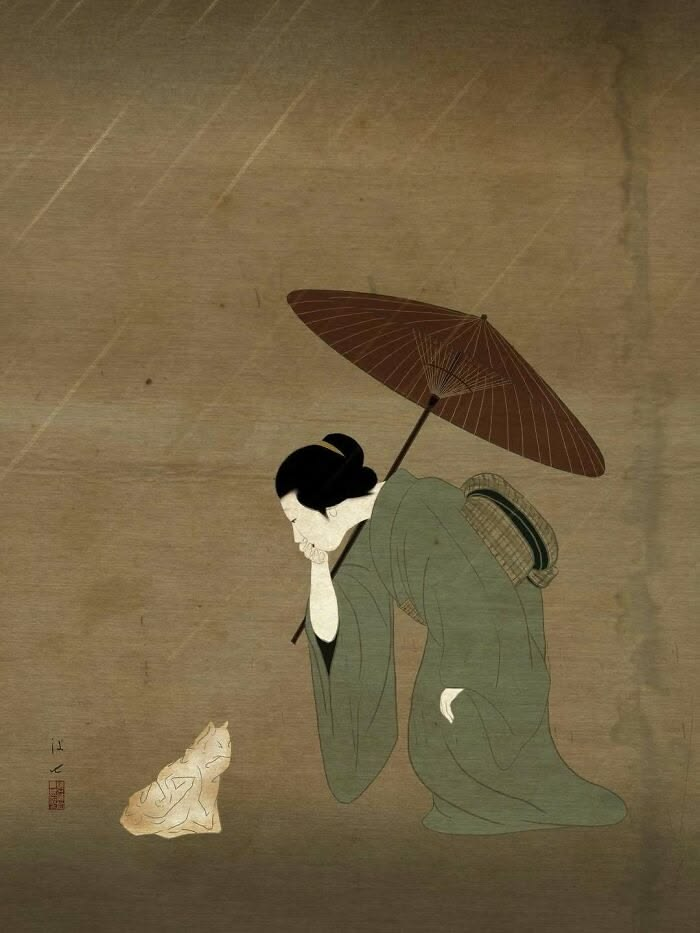
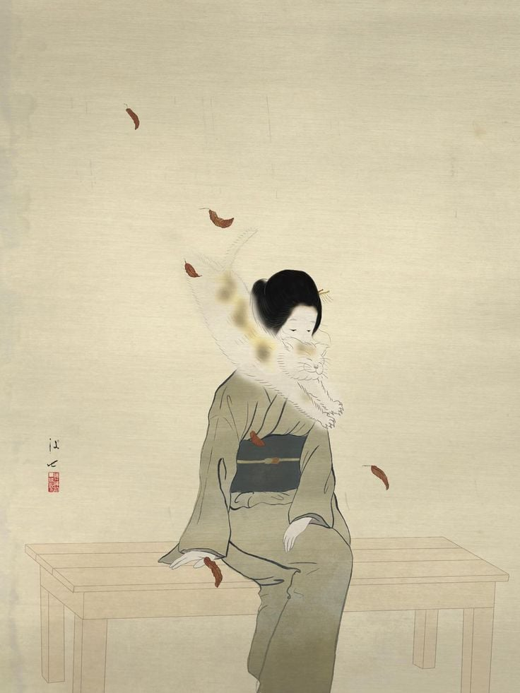
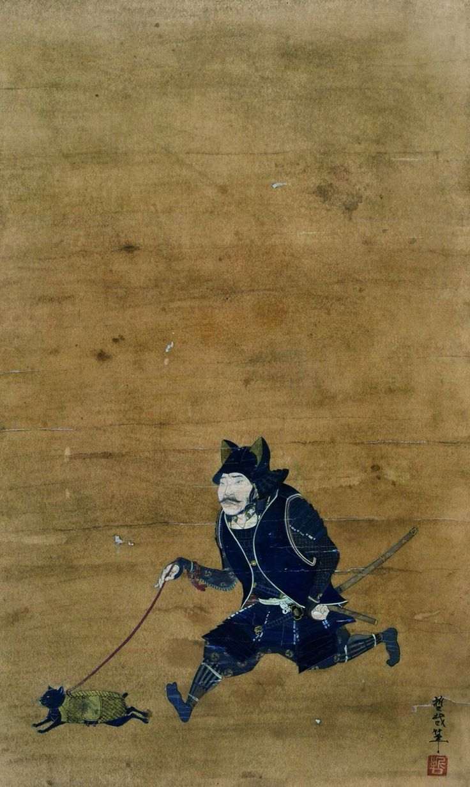
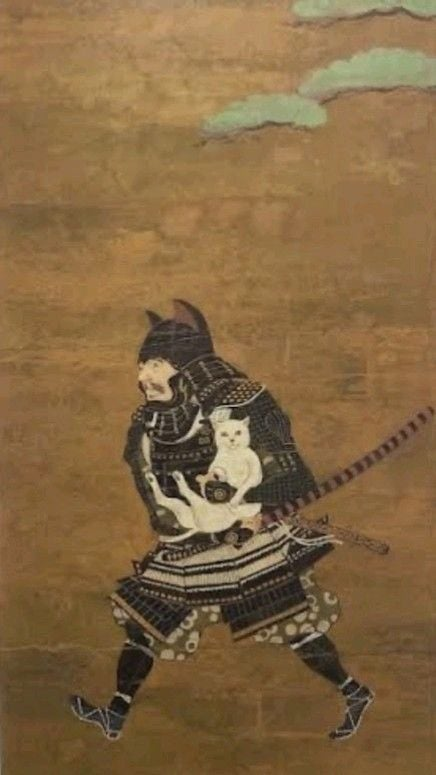







ㅡ







고양이 토 ㅋㅋㅋㅋㅋㅋ
고양이 귀 투구 사무라이는 뭐냥 ㅋㅋㅋㅋㅋㅋ
몬가 우키요에풍으로 그린 요즘그림이나 ai같네
요즘 그림같음ㅋㅋㅋㅋ 구도라던가 소재라던가
딴거는 그런갑다 하는데 무지개토 땜에 ㅋㅋ
아니 시바 다시보니 비오는날 비닐봉다리를 고양이로 잘못보는 그림있네 ㅋㅋ
저 무지개 표현을 보면 아무리봐도 현대식 재해석 같은데… 동양에서 전통적 무지개는 5색이었고 토를 무지개로 표현하지도 않앗을거니까
무지개를 토해내는 영물ㄷㄷ
걍 죄다 현대작품같은데
야니네코 어디갔으
봉다리 ㅋㅋㅋㅋㅋ
https://www.instagram.com/poshichi_
비닐봉다리 ㅋㅋㅋㅋ
얼굴 꾸기지 말라고ㅋㅋㅋㅋㅋ
고양이는 그때나 지금이나 똑같네 ㅋㅋㅋ
웃겨요얘
고양이는 동서고금 똑같구나
ㄴㅋㅋㅋㅋㅋㅋㅋㅋㅋㅋㅋㅋ 얼굴 누르는거 죵나웃기노
단또쉨들 똥꼬 갖다대는건 만국공통이군